Cadre Scolaire
Snake
C / Bibliothèque graphique de l'IUT
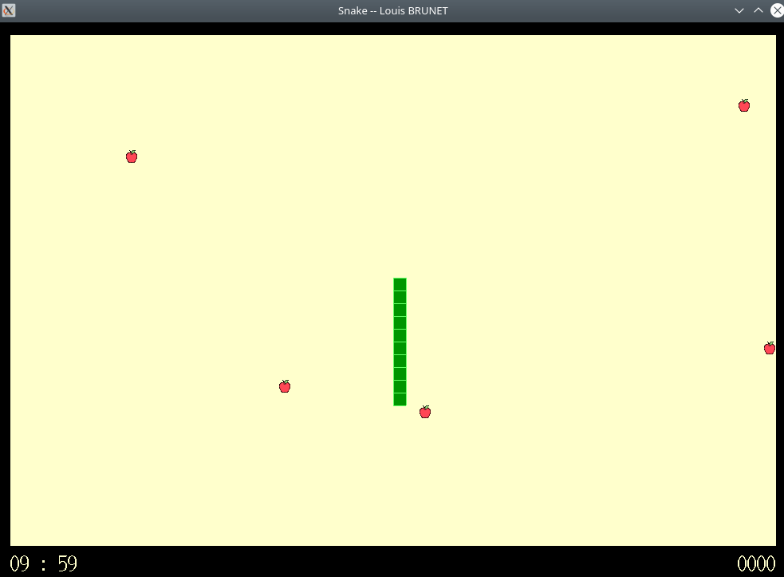
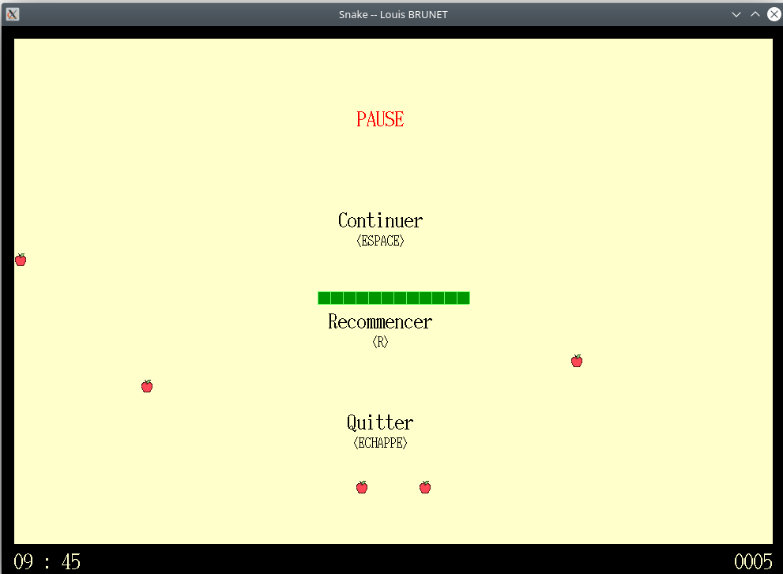
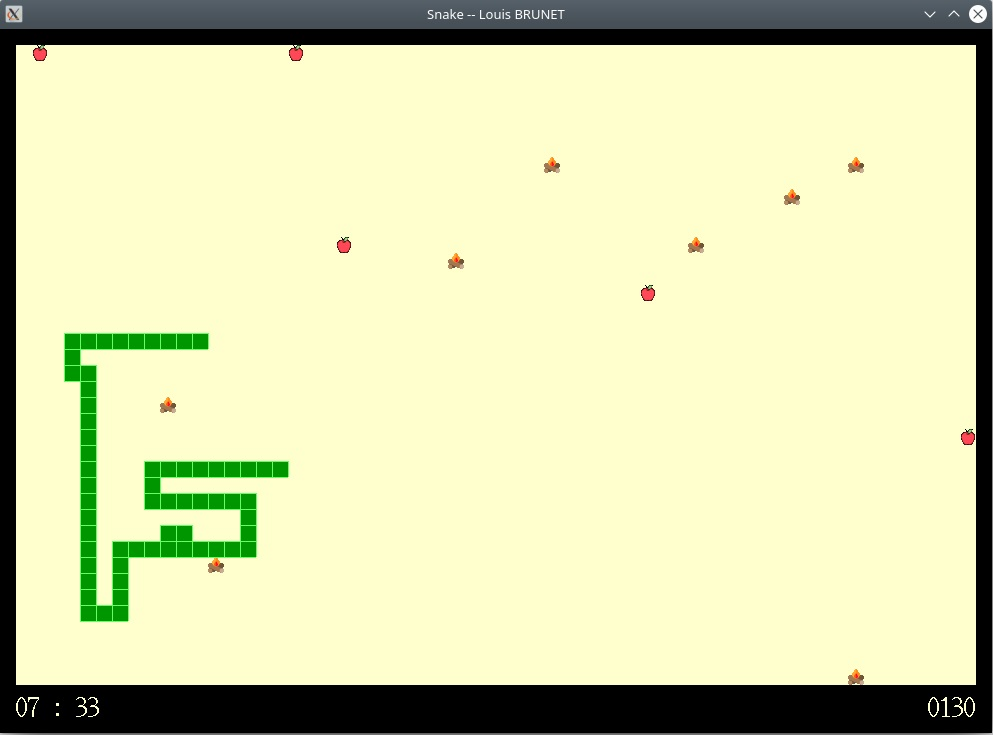
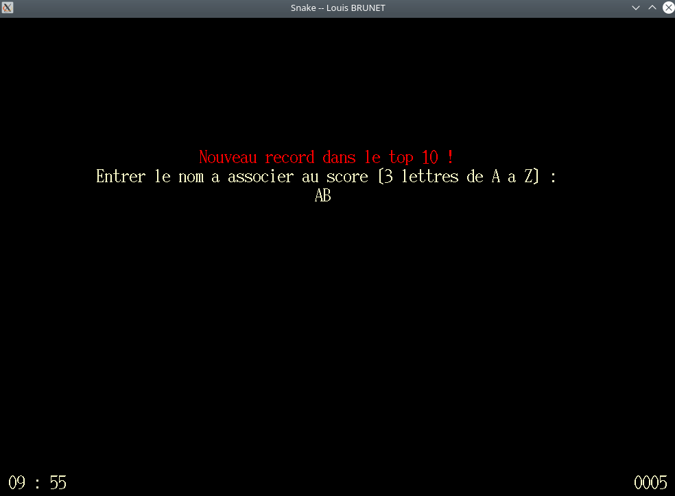
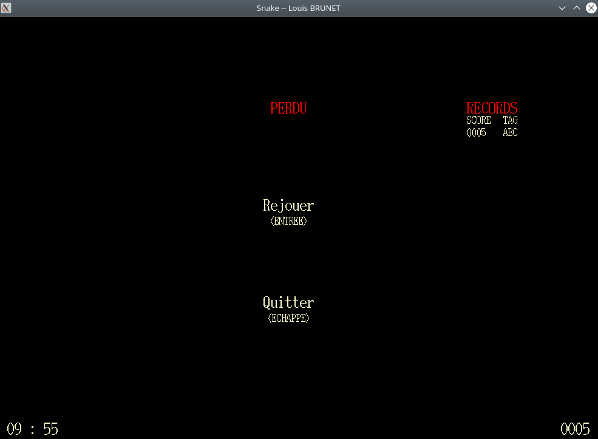

- Fonctionnalités
-
Règles classiques du Snake :
- Le serpent avance d'une case par frame, sa taille augmente de deux cases par pomme mangée
- Le score actuel du joueur, ainsi que le temps restant à la partie, sont visibles en bas de l'écran de jeu
-
Variantes
- La vitesse de jeu est accélérée au fil de la partie
- Un obstacle (feu de bois) est généré pour trois pommes mangées
- Le top 10 des records atteints est enregistré sur la machine
-
- Systèmes compatibles
- Linux
Site personnel
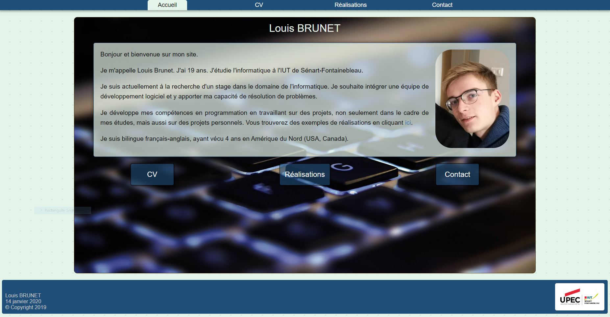
HTML5, CSS3, JavaScript
-
Fonctionnalités
- Réalisé pour l'apprentissage du développement web à l'IUT de Sénart-Fontainebleau
- Contient une page d'accueil et des pages pour mon CV, mes réalisations informatiques, et pour me contacter
Projets personnels
Échecs
Java / Swing
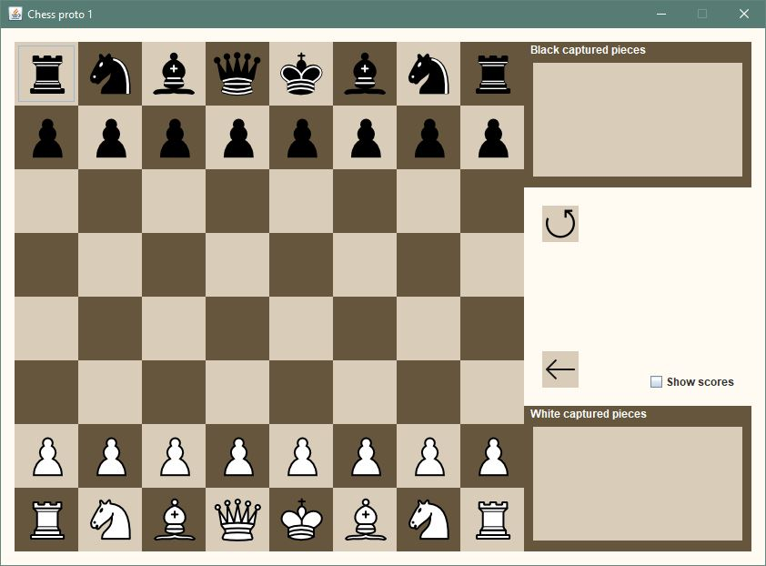
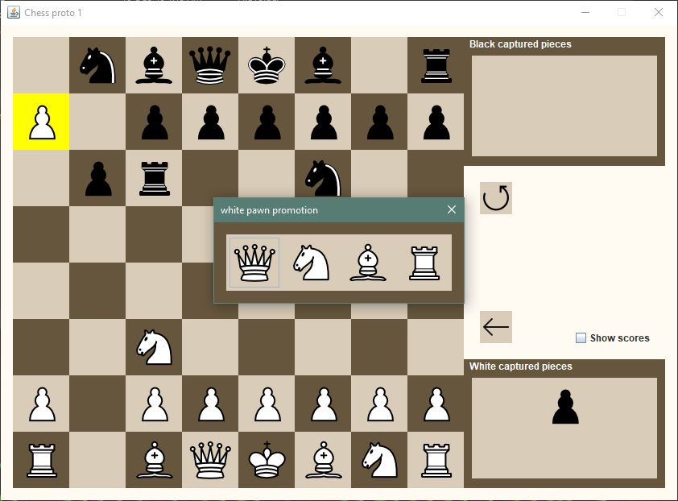
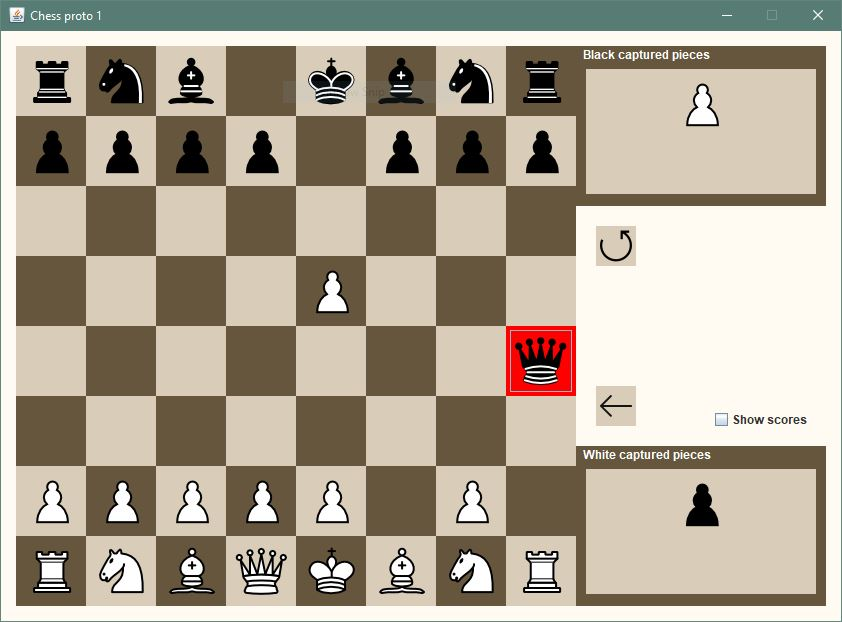
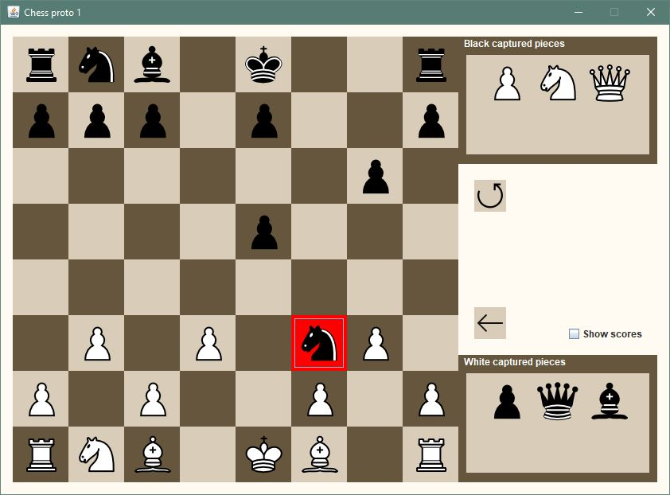
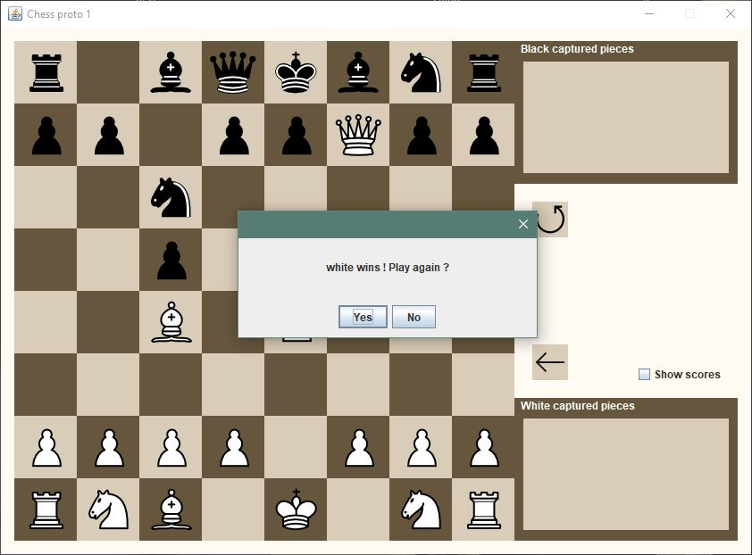
-
Fonctionnalités
-
Partie d'échecs entre deux joueurs locaux :
- Règles classiques des échecs -- les joueurs peuvent effectuer un déplacement seulement si celui-ci est autorisé
- Possibilité d'annuler le dernier déplacement ou de recommencer la partie
-
- Systèmes compatibles
- Windows
- Linux
- macOs
Space Invaders
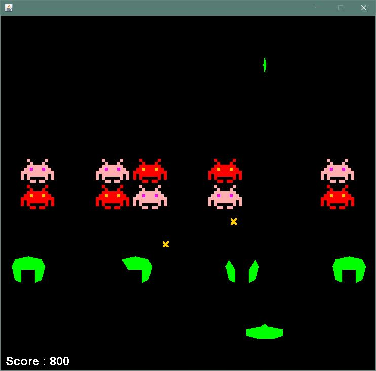
Java / Swing
-
Fonctionnalités
-
Partie classique de Space Invaders :
- Le joueur a trois vies, son score augmente en fonction des ennemis et projectiles détruits
- La prochaine vague d'ennemis arrive quand le joueur détruit tous les ennemis d'une vague
- Les bunkers sont détruits seulement par les projectiles ennemis
-
- Systèmes compatibles
- Windows
- Linux
- macOs